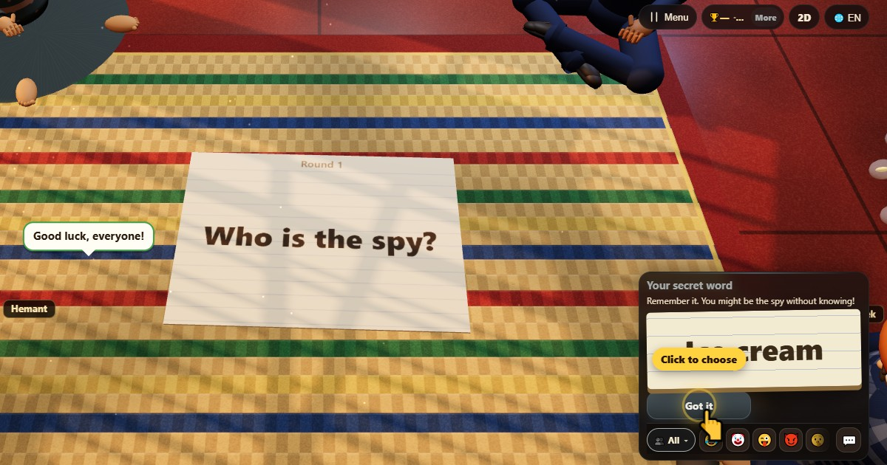

जासुस को हो? (Who Is the Spy?)
- 👥 4–10 खेलाडी
- पार्टी खेल
- 🆓
नेपाली गाइड
सबैको एउटै गोप्य शब्द, जासुसको मात्र फरक। संकेतबाट जासुस समात्नुहोस्।
English name: Who Is the Spy?

कसरी खेल्ने
- हरेक खेलाडीले चुपचाप आफ्नो शब्द पढ्छ।
- टेबल घुम्दै हरेकले आफ्नो शब्दको एउटा सङ्केत कार्ड चाल्छ।
- सङ्केत पढ्नुहोस्, त्यसपछि सबैले गोप्य रूपमा शङ्का लागेकोलाई भोट दिन्छन्।
- सबैभन्दा धेरै भोट पाउनेमाथि आरोप लाग्छ। बराबर भोटमा कसैमाथि होइन, र जासुस उम्कन्छ।
- जासुस समातिए उसले चार विकल्पबाट अरूको शब्द एक पटक अनुमान गर्ने मौका पाउँछ।
अङ्क कसरी पाइन्छ
उम्केको जासुसले 3 पाउँछ। समातिएर शब्द अनुमान गरे 2; गलत भए बाँकी सबैले 1। आठ वा बढी खेलाडीमा दुई जासुस।
को जित्छ
तीन राउन्डपछि सबैभन्दा धेरै अङ्क हुने जित्छ।
धेरै सोधिने प्रश्न
के जासुसलाई आफू जासुस हो भन्ने थाहा हुन्छ?
हुँदैन। जासुससँग फरक शब्द मात्र हुन्छ, र उसले अरूका सङ्केतबाट बुझ्नुपर्छ।
कति खेलाडी चाहिन्छ?
कम्तीमा चार। सिट कम्प्युटर खेलाडीले भर्न सक्छन्।
कसरी खेल्ने
- अतिथिको रूपमा: दर्ता छैन, लगइन छैन। नाम छान्नुहोस् र तुरुन्तै खेल्नुहोस्।
- कम्प्युटरसँग: कोही नभए खाली ठाउँ कम्प्युटर खेलाडीले भर्छ। सजिलो, सामान्य वा कठिन।
- अनलाइन: संसारभरका खेलाडी भएको खुला टेबलमा बस्नुहोस्।
- नजिकका साथीहरूसँग: एउटा फोनमा खेल सुरु गरेर कोड वा QR कोड पठाउनुहोस्। साथीहरू आफ्नै फोनबाट जोडिन्छन्।
- एउटै फोनमा: पालैपालो फोन सार्नुहोस्: पूरै परिवारलाई एउटा फोन पुग्छ।
अरू भाषा
- हिन्दी: जासूस कौन?
- Hinglish: Jasoos Kaun? (Who Is the Spy)
- Español: ¿Quién es el espía?
- Português: Quem é o espião?
- Français: Qui est l'espion ?
- Deutsch: Wer ist der Spion?
- Bahasa Indonesia: Siapa Mata-matanya?
- Türkçe: Casus Kim?
- Italiano: Chi è la spia?
- 日本語: ワードウルフ（スパイは誰？）
- 한국어: 라이어 게임 (스파이는 누구?)
- 中文: 谁是卧底
- Русский: Найди шпиона
- اردو: جاسوس کون؟
- বাংলা: গুপ্তচর কে?
- English: Who Is the Spy? · पूरा नियम (अंग्रेजी)
खेलका आइडिया
सबै खेल


ChitPlay मा वास्तविक पैसा, बाजी वा पुरस्कार छैन। अंकको कुनै मूल्य छैन।